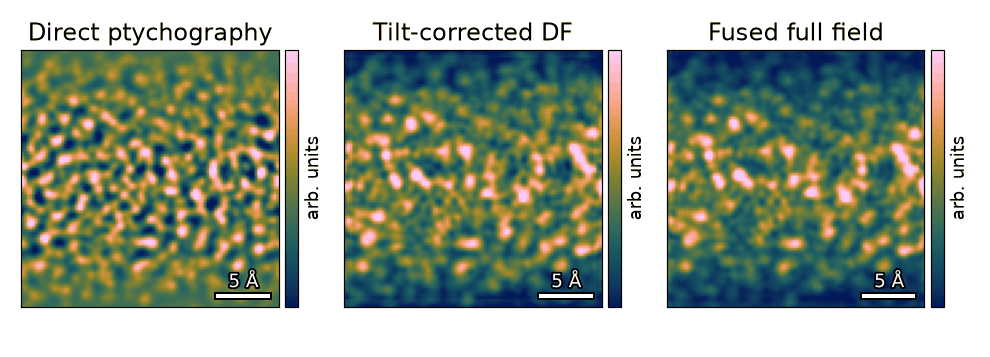
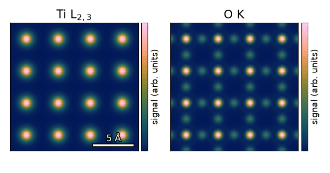

scatterem#
4D-STEM reconstruction and differentiable STEM simulations on the GPU, in PyTorch.

Amorphous carbon, 300 kV: direct ptychography, tilt-corrected dark field and their fused full-field image. Data: You et al., Zenodo, doi:10.5281/zenodo.18008901, CC-BY-4.0.#

SrTiO3 [001], 100 kV: Ti L2,3 and O K core-loss maps, simulated by BiP-PRISM with analytic hydrogenic states (not quantitative).#
Fuses direct ptychography and tilt-corrected dark field into one 4D-STEM image with no missing band of spatial frequencies.
S. You et al., Adv. Sci. 13 (2026) e76620, doi:10.1002/advs.76620
Simulates core-loss STEM-EELS. It partitions both scattering matrices, so a full-resolution elemental map fits on one GPU.
P. Pelz, J. Phys. Mater. (2026), doi:10.1088/2515-7639/aebdd0
Simulates elastic 4D-STEM data from the plane-wave and the partitioned scattering matrix.
P. Pelz, J. Phys. Mater. (2026), doi:10.1088/2515-7639/aebdd0
pip install scatterem
 Run the FF-STEM demo on a free GPU, with nothing to install, or pick one of
the paper-figure notebooks.
Run the FF-STEM demo on a free GPU, with nothing to install, or pick one of
the paper-figure notebooks.
Quickstart · API · Cite